Não creio que haja uma emoção mais intensa para um inventor do que ver suas criações funcionando. Essas emoções fazem você esquecer de comer, de dormir, de tudo.
"Se você soubesse a magnificência de 3, 6 e 9, então você tem a chave do universo."
Nikola Tesla, nascido em 1856 na atual Croácia, foi um inventor que contribuiu significativamente para o desenvolvimento de tecnologias como a transmissão via rádio e a física nuclear. Ele estudou Engenharia Elétrica e começou sua carreira como engenheiro eletricista. Tesla é conhecido por desenvolver o princípio do campo magnético rotativo e projetar o primeiro motor assíncrono de campo giratório. Ele trabalhou com Thomas Edison, mas divergências sobre corrente contínua levaram ao seu desentendimento. Tesla registrou cerca de 40 patentes nos EUA e mais de 700 no mundo todo. Apesar de morrer empobrecido, seu legado continua a influenciar a ciência e a tecnologia até hoje.
10 de Julho de 1856: Nikola Tesla nasceu em Smiljan, então parte do Império Austro-Húngaro.
1875: Tesla começou a estudar engenharia no Instituto Politécnico da Áustria em Graz.
1882:Tesla começou a trabalhar para a Continental Edison em Paris, onde tentava melhorar o equipamento elétrico enviado dos Estados Unidos. No mesmo ano, ele identificou o princípio do campo de indução magnética rotativo, que é usado hoje em alternadores.
1884: Tesla se mudou para os Estados Unidos e começou a trabalhar com Thomas Edison.
1885:Depois de uma disputa com Edison sobre o pagamento de um bônus prometido, Tesla deixou a empresa de Edison.
1886: Tesla fundou a Tesla Electric Light and Manufacturing Company em Rahway, New Jersey.
1887: Começou a "Guerra das Correntes" entre a corrente contínua de Edison e a corrente alternada de Tesla.
1891: Tesla patenteou a Bobina de Tesla, um circuito de transformador ressonante que produz eletricidade de alta tensão, baixa corrente e alta frequência .
1901:Começou a construção da Torre Wardenclyffe. Tesla acreditava que poderia transmitir energia elétrica sem fio em longas distâncias, e a torre ilustraria isso. No entanto, o projeto nunca foi totalmente concluido.
4 de Agosto de 1915: Tesla entrou com uma ação contra Guglielmo Marconi, que é geralmente creditado com a transmissão de rádiom embora Tesla tenha realizado isso antes de Marconi..
1934:O New York Times publicou a pesquisa de feixe de partículas de Tesla.
1943:Enfim, Nikola Tesla tem seu último respiro. Mas seu legado continua a influenciar a ciência e a tecnologia até hoje. Ele é considerado um dos maiores gênios da humanidade e um dos mais importantes visionários de seu tempo.